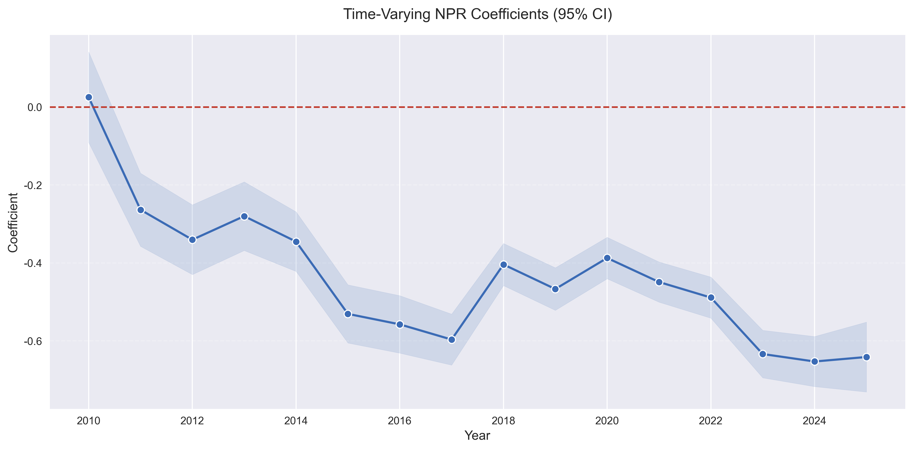
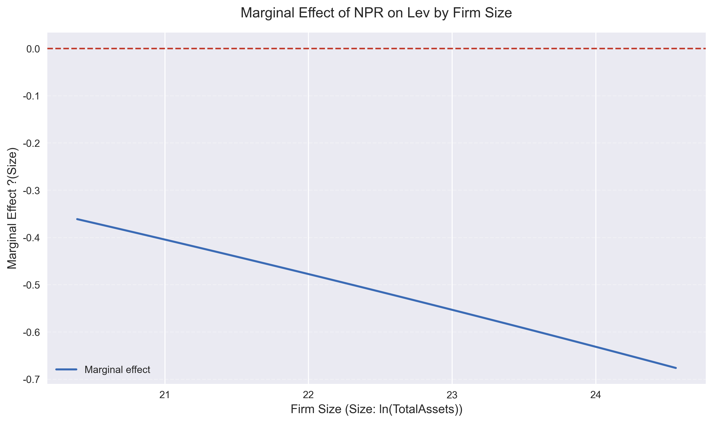
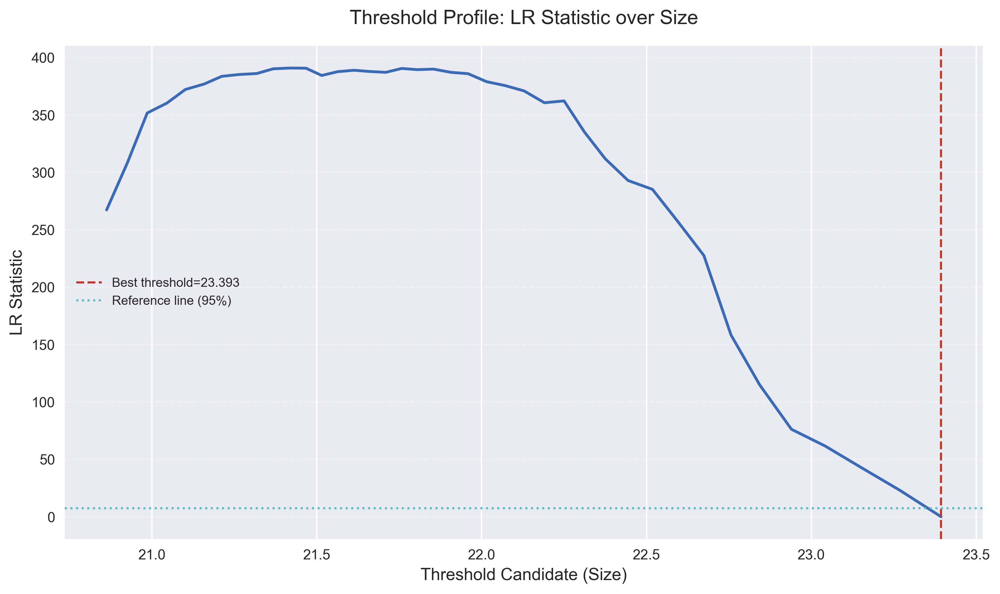

5 时变系数模型（M4）
6 稳健性检验
M4 通过 NPR × 年份 交互项估计逐年斜率（公司固定效应）。
根据 output/model_m4.txt 的代表性结果：
| 年份 | NPR系数 | p值 |
|---|---|---|
| 2010 | 0.025 | 0.668 |
| 2011 | -0.263 | <0.001 |
| 2015 | -0.531 | <0.001 |
| 2017 | -0.596 | <0.001 |
| 2020 | -0.387 | <0.001 |
| 2023 | -0.633 | <0.001 |
| 2024 | -0.653 | <0.001 |
| 2025 | -0.641 | <0.001 |
除 2010 年外，其余年份系数均显著为负。

结论：负向关系在时间上总体稳定，但强度存在阶段性变化。
6.1 函数系数模型（M5）
M5 采用规模多项式交互刻画 beta(Size)：
NPR = 0.518（不显著）NPR_Size = -0.016（不显著）NPR_Size2 = -0.001（不显著）

结果显示：平滑非线性调节在该设定下统计显著性较弱。
6.2 门槛稳健性（M6）
M6 使用 Size 网格搜索做门槛式稳健性检验：
- 估计门槛：
Size = 23.393 - 对应资产规模约：
exp(23.393) ≈ 144.4亿元人民币 - 小规模组（
<= 门槛）：NPR = -0.414*** - 大规模组（
> 门槛）：NPR = -0.492***

结论：两组均保持显著负向关系，且大规模组负向效应更强。
6.3 稳健性总结
- 符号稳健：主要模型中
NPR均为负。 - 设定稳健：加入
m2_growth后基准结论不变。 - 异质性稳健：产权与规模改变斜率大小，但不改变核心方向。
- 时间稳健：除 2010 年外，后续年份基本显著为负。